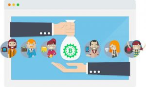
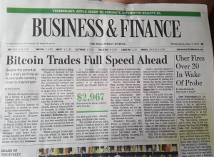

<?xml version="1.0" encoding="UTF-8"?><rss version="2.0"
	xmlns:content="http://purl.org/rss/1.0/modules/content/"
	xmlns:wfw="http://wellformedweb.org/CommentAPI/"
	xmlns:dc="http://purl.org/dc/elements/1.1/"
	xmlns:atom="http://www.w3.org/2005/Atom"
	xmlns:sy="http://purl.org/rss/1.0/modules/syndication/"
	xmlns:slash="http://purl.org/rss/1.0/modules/slash/"
	>

<channel>
	<title>Uncategorised &#8211; BitRig</title>
	<atom:link href="https://www.bitrig.co.za/category/uncategorised/feed/" rel="self" type="application/rss+xml" />
	<link>https://www.bitrig.co.za</link>
	<description>Bitmain Mines &#124; Bitrig Start.Mining</description>
	<lastBuildDate>Mon, 05 Mar 2018 09:46:33 +0000</lastBuildDate>
	<language>en-ZA</language>
	<sy:updatePeriod>hourly</sy:updatePeriod>
	<sy:updateFrequency>1</sy:updateFrequency>
	<generator>https://wordpress.org/?v=4.8.2</generator>
	<item>
		<title>Romantic Gift Ideas</title>
		<link>https://www.bitrig.co.za/2018/02/02/romantic-gift-ideas/</link>
		<pubDate>Fri, 02 Feb 2018 04:43:53 +0000</pubDate>
		<dc:creator><![CDATA[rigcrew]]></dc:creator>
				<category><![CDATA[Uncategorised]]></category>

		<guid isPermaLink="false">https://www.bitrig.co.za/?p=37108</guid>
		<description><![CDATA[February is the month of love, and we thought it would be a great idea to give cryptocurrency investors some gift ideas for their significant other. (By the way, Valentine’s day is the 14 of February – it’s the same every year, and don’t you forget it!) Here are some cool gift ideas that you&#8230;]]></description>
				<content:encoded><![CDATA[<p><b>February is the month of love, </b><span style="font-weight: 400;">and we thought it would be a great idea to give cryptocurrency investors some gift ideas for their significant other. (By the way, Valentine’s day is the 14 of February – it’s the same every year, and don’t you forget it!) Here are some cool gift ideas that you can pay for in cryptocurrency.</span></p>
<p><a href="https://btcfor.gifts/"><b>Gift Cards with Crypto</b></a></p>
<p><span style="font-weight: 400;">Gift Cards with Crypto is a website set up so that you can buy gift cards from popular retailers with cryptocurrency. These cover </span><i><span style="font-weight: 400;">most major retailers abroad</span></i><span style="font-weight: 400;">, so it’s a perfect way to turn your cryptocurrency into gift cards and buy whatever your loved one desires. </span></p>
<p><a href="https://bitcoin.travel/"><b>Bitcoin Travel</b></a></p>
<p><span style="font-weight: 400;">Bitcoin Travel is a travel agency just for bitcoin – now you can go anywhere in the world with your cryptocurrency. Hasn’t your significant other been saying that they could </span><i><span style="font-weight: 400;">really</span></i><span style="font-weight: 400;"> use a holiday? Make this the year you actually do it! You can also check out Fortune.com’s listing of </span><a href="http://fortune.com/2017/12/21/bitcoin-travel-cryptocurrency-bookings/"><span style="font-weight: 400;">bitcoin travel bookings here</span></a><span style="font-weight: 400;">.</span></p>
<p><a href="https://spendabit.co/go?q=jewelry"><b>Spendabit</b></a></p>
<p><span style="font-weight: 400;">Spendabit is a catalog for things you can buy with bitcoin, and here is their section for jewellery places accepting bitcoin as a payment method. Diamonds are a girl’s best friend, aren’t they?</span></p>
<p><a href="https://www.reeds.com/about/Bitcoin.html"><b>Reeds Jewelers</b></a></p>
<p><span style="font-weight: 400;">Reeds Jewelers is an already-established jeweller who has started accepting payments in bitcoin. You can find their page for bitcoin investors and buyers at the link above.</span></p>
<p><a href="http://www.cryptojeweler.com/"><b>CryptoJeweler.com</b></a></p>
<p><span style="font-weight: 400;">Lucky for you, Reeds Jewelers isn’t your only option – there’s also CryptoJeweler.com, which allows for payments with most of the popular cryptocurrencies so you can get your partner something glittery for this year.</span></p>
<h4><b>A Hardware Bitcoin Wallet</b></h4>
<p><span style="font-weight: 400;">A hardware bitcoin wallet makes a great gift – especially for couples who are investing and mining bitcoin together. The coolest option we found is the Trezor cryptocurrency wallet</span><a href="https://www.takealot.com/trezor-cryptocurrency-hardware-wallet-black/PLID48227535?gclid=CjwKCAiA78XTBRBiEiwAGv7EKin4os9IC0qMRd3JNimGC6vvfUCvDgsmg3Y0FWGahIk-fKjx79UWyhoCrbIQAvD_BwE"><span style="font-weight: 400;"> available from Takealot</span></a><span style="font-weight: 400;">. It’s up to you whether you’d like to pre-load some surprise cryptocurrency onto your spouse’s wallet as an extra, extra gift for Valentine’s day.</span></p>
<p><b>Did we mention that Valentine’s day is the 14</b><b>th</b><b> of February? Yes, this is the same every year – make sure you mark it on your calendar!</b></p>
]]></content:encoded>
			</item>
		<item>
		<title>Top 10 Trending Cryptocurrencies</title>
		<link>https://www.bitrig.co.za/2018/02/02/top-10-trending-cryptocurrencies/</link>
		<pubDate>Fri, 02 Feb 2018 04:30:16 +0000</pubDate>
		<dc:creator><![CDATA[rigcrew]]></dc:creator>
				<category><![CDATA[Uncategorised]]></category>

		<guid isPermaLink="false">https://www.bitrig.co.za/?p=37102</guid>
		<description><![CDATA[One of the most common questions we get asked is “What is the best cryptocurrency to invest in?” Well, we took a look at the current top 10 trending cryptocurrencies according to market watch and cryptocurrency news site CoinMarketCap, their current trading value and why you should consider investing in these cryptocurrencies that are on&#8230;]]></description>
				<content:encoded><![CDATA[<p><span style="font-weight: 400;">One of the most common questions we get asked is “What is the best cryptocurrency to invest in?” Well, we took a look at the current top 10 trending cryptocurrencies according to market watch and cryptocurrency news site </span><b>CoinMarketCap, </b><span style="font-weight: 400;">their current trading value and why you should consider investing in these </span><b>cryptocurrencies that are on the rise right now.</b></p>
<ol>
<li><b> Bitcoin</b></li>
</ol>
<p><b>Trading for: $10, 244.80</b></p>
<p><span style="font-weight: 400;">Bitcoin is the cryptocurrency that began the trend, and is arguably the one most people are familiar with. It was started by creator Satoshi Nakamoto, after whom the split denomination “satoshi” is named. It’s still on the rise and an excellent investment, but people shouldn’t forget that it’s not the only one around. </span></p>
<ol start="2">
<li><b> Ethereum</b></li>
</ol>
<p><b>Trading for: $1, 106.24</b></p>
<p><span style="font-weight: 400;">Ethereum is a very strong competitor to bitcoin and one worth investing in. Its website describes it as “a decentralized platform for applications that run exactly as programmed without any chance of fraud, censorship or third-party inference.” That, folks, means it’s pretty secure – that’s why it’s still around.</span></p>
<ol start="3">
<li><b> Ripple</b></li>
</ol>
<p><b>Trading for: $1.15</b></p>
<p><span style="font-weight: 400;">One ripple is worth just little over one US dollar right now – and we’d say that means it’s worth watching. There was a time when bitcoin, too, was young in terms of value – and then it shot right up to the rafters and climbed further, leaving a lot of people wishing they invested when the values were low.</span></p>
<ol start="4">
<li><b> Bitcoin Cash</b></li>
</ol>
<p><b>Trading for: $1,511.83</b></p>
<p><span style="font-weight: 400;">Bitcoin Cash is surging right up there with the high players, and it’s been in the news a lot recently – for one, an organization in the US is standing up to claim that Bitcoin Cash is to be known as the original cryptocurrency. Despite this, or maybe even because of it, this cryptocurrency is still going strong.</span></p>
<ol start="5">
<li><b> Cardano</b></li>
</ol>
<p><b>Trading for: $0.519478</b></p>
<p><span style="font-weight: 400;">Cardano was apparently launched in September 2016 by Input Output Hong Kong, and CoinMarketCap has this in their top 10 list of currently traded cryptocurrencies. It’s been on the way up, and investors are convinced that it’ll only go up from here.</span></p>
<ol start="6">
<li><b> Neo</b></li>
</ol>
<p><b>Trading for: $145.57</b></p>
<p><span style="font-weight: 400;">Neo immediately makes some people think of the Matrix, but it’s in fact Latin for “new” &#8211; not just an acronym for one. Now, it’s a cryptocurrency too. Neo has experienced what </span><a href="https://themerkle.com/neo-price-retakes-160-level-thanks-to-slow-and-steady-growth/"><span style="font-weight: 400;">articles</span></a><span style="font-weight: 400;"> in the media have referred to as “slow and steady” growth, which for some investors are better than hard and fast.</span></p>
<ol start="7">
<li><b> Stellar</b></li>
</ol>
<p><b>Trading for: $0.518292</b></p>
<p><span style="font-weight: 400;">Stellar calls itself “an open platform for building financial products that connect people everywhere”, and its steady rise since its creation (and the expectation that it’ll continue to rise in value) makes it part of the top 10 currently traded cryptocurrencies.</span></p>
<ol start="8">
<li><b> Litecoin</b></li>
</ol>
<p><b>Trading for: $164.70</b></p>
<p><span style="font-weight: 400;">Litecoin is a cryptocurrency forked from Bitcoin, and it’s one that you likely will have heard of yourself. Maybe by this point you even own a few. It was first introduced in November 2017 by Charlie Lee, and it’s almost identical in structure to bitcoin.</span></p>
<ol start="9">
<li><b> EOS</b></li>
</ol>
<p><b>Trading for: $12.05</b></p>
<p><span style="font-weight: 400;">According to an article on </span><a href="https://cryptoslate.com/examining-eos-platform-cryptocurrency/"><span style="font-weight: 400;">Cryptoslate</span></a><span style="font-weight: 400;">, this cryptocurrency has attracted the attention of companies like J.P. Morgan Chase, Microsoft, Intel, and MasterCard – and at this point the heavy interest in this mysterious currency makes it number 9.</span></p>
<ol start="10">
<li><b> NEM</b></li>
</ol>
<p><b>Trading for: $0.772205</b></p>
<p><span style="font-weight: 400;">NEM is a unique cryptocurrency because the code that powers it was written entirely in Java. It was first launched in 2015, and it appears to be one of those cryptocurrencies that are experiencing the slow and steady growth which draws certain investors.</span></p>
<p><span style="font-weight: 400;">Have you invested in one (or more!) of the top 10?</span></p>
]]></content:encoded>
			</item>
		<item>
		<title>The Pros and Cons of Bitcoin Investment</title>
		<link>https://www.bitrig.co.za/2017/12/21/the-pros-and-cons-of-bitcoin-investment/</link>
		<pubDate>Thu, 21 Dec 2017 08:27:52 +0000</pubDate>
		<dc:creator><![CDATA[rigcrew]]></dc:creator>
				<category><![CDATA[Uncategorised]]></category>

		<guid isPermaLink="false">https://www.bitrig.co.za/?p=37022</guid>
		<description><![CDATA[The world has already invested billions of dollars into bitcoin, and you can still choose to invest either by directly buying bitcoin or choosing to invest in a bitcoin miner and mine bitcoins. But there are many people who still aren’t sure. Are you one of those people? Don’t stress: If you’re still weighing up&#8230;]]></description>
				<content:encoded><![CDATA[<p><b>The world has already invested billions of dollars into bitcoin, </b><span style="font-weight: 400;">and you can still choose to invest either by directly buying bitcoin </span><i><span style="font-weight: 400;">or</span></i><span style="font-weight: 400;"> choosing to invest in a bitcoin miner and mine bitcoins. But there are many people who still aren’t sure. </span><i><span style="font-weight: 400;">Are you one of those people?</span></i> <span style="font-weight: 400;">Don’t stress: If you’re still weighing up the pros and cons of bitcoin investment, we took a look at some pros, cons and common questions to help you decide.</span></p>
<p><span style="font-weight: 400;">Get in touch with us if you have any questions we haven’t covered here – we’re more than happy to answer your questions about cryptocurrency, bitcoin or any of the products available through our website.</span></p>
<p><b>Pros</b></p>
<ul>
<li style="font-weight: 400;"><b>Bitcoin is a decentralized currency. </b><span style="font-weight: 400;">This means that it is not controlled by a central agency like a country’s Reserve Bank – so it’s exchange rates aren’t influenced by all the ups and downs that would affect a traditional currency like the US dollar. This also means that a </span><i><span style="font-weight: 400;">major financial crash</span></i><span style="font-weight: 400;"> would not necessarily affect cryptocurrencies like bitcoin.</span></li>
<li style="font-weight: 400;"><b>Invest now, or you might wish you did so later on when the price of bitcoin reaches even higher highs.</b><span style="font-weight: 400;"> Bitcoin has soared to record-breaking highs in recent weeks – and we believe that it will very well continue to do so in the weeks to come. Invest in bitcoin mining or bitcoins while you still can. </span></li>
<li style="font-weight: 400;"><b>Cryptocurrencies are stored safely. </b><span style="font-weight: 400;">As long as you keep your passwords, bitcoin addresses and cryptocurrency login details safe: Never write them down, never share them online, and don’t take chances with cryptocurrency that you wouldn’t take with cold, hard cash.</span></li>
<li style="font-weight: 400;"><b>More retailers are accepting bitcoin as a payment option.</b><span style="font-weight: 400;"> This includes South African businesses, who accept bitcoin payments converted into cash through the payment gateway PayFast – and PnP who has trialled bitcoin payments as a payment method in stores. You can also use bitcoin to pay for your Takealot purchases. Isn’t that awesome?</span></li>
<li style="font-weight: 400;"><b style="font-weight: 400;">The value of bitcoin </b><b>continues</b><b style="font-weight: 400;"> to grow.</b><span style="font-weight: 400;"> We’ve been keeping an eye on the news so that you don’t have to, and the value of bitcoin has continued to soar above $11, 000. That’s why you should contact us to find out more about how you can join the bitcoin revolution. </span></li>
</ul>
<p><b>Cons</b></p>
<p><span style="font-weight: 400;">Every investment has its cons and pitfalls. Here’s what to watch out for.</span></p>
<ul>
<li style="font-weight: 400;"><span style="font-weight: 400;">There are many scams abound, from bitcoin wallets that will only steal your money to new cryptocurrencies that promise untold wealth – but will end in tears for the hopeful investors. </span><b>If you spot a cryptocurrency, website, wallet or app that you’re not sure about, contact us and we’ll check it out for you. Don’t get caught up in a scam.</b></li>
<li style="font-weight: 400;"><b>Misplace your bitcoin wallet or address and you could lose access to your investment. </b><span style="font-weight: 400;">Always keep it secure – and that means treating it like you would a bar of gold. Absolutely safe and secure.</span></li>
</ul>
<p><b>If you’re mining, have an alternate power source. </b><span style="font-weight: 400;">Cryptocurrency mining requires vast amounts of fossil fuel energy: And you could lose out on mining time if you are hit by a power cut. It’s worth it to use some of the return you get on your investment</span></p>
]]></content:encoded>
			</item>
		<item>
		<title>Mining via App: Portable Mining Explored</title>
		<link>https://www.bitrig.co.za/2017/12/21/mining-via-app-portable-mining-explored/</link>
		<pubDate>Thu, 21 Dec 2017 08:04:49 +0000</pubDate>
		<dc:creator><![CDATA[rigcrew]]></dc:creator>
				<category><![CDATA[Uncategorised]]></category>

		<guid isPermaLink="false">https://www.bitrig.co.za/?p=37004</guid>
		<description><![CDATA[It turns out that you don’t need a massive mining rig that looks like Google’s massive server room to get into bitcoin mining. There are tons of apps available that allow you to keep an eye on bitcoin exchanges using that there device you keep in your pocket and bitcoin wallet apps that keep your&#8230;]]></description>
				<content:encoded><![CDATA[<p><span style="font-weight: 400;">It turns out that you don’t need a massive mining rig that looks like Google’s massive server room to get into bitcoin mining. There are tons of apps available that allow you to keep an eye on bitcoin exchanges using that there device you keep in your pocket and bitcoin wallet apps that keep your bitcoins safe; not just that, but you can also</span><i><span style="font-weight: 400;"> mine cryptocurrency</span></i><span style="font-weight: 400;"> using your smart device.</span></p>
<p><span style="font-weight: 400;">We took a look at some cryptocurrency-related apps for you.</span></p>
<p>&nbsp;</p>
<h4><b>Safe Bitcoin Wallets</b></h4>
<ul>
<li><b>Luno Bitcoin Wallet</b></li>
</ul>
<p><a href="https://play.google.com/store/apps/details?id=co.bitx.android.wallet"><span style="font-weight: 400;">https://play.google.com/store/apps/details?id=co.bitx.android.wallet</span></a></p>
<p><span style="font-weight: 400;">There are many bitcoin wallet options available – so many that you can almost get lost in the lilstings. Pick something reputable (and make sure to read reviews from both happy and unhappy users) to make sure you don’t risk you bitcoins with dodgy third-party software. One of the reputable ones happens to be the Lumo Bitcoin Wallet, which also now supports other cryptocurrencies like Ethereum.</span></p>
<ul>
<li><b>BTC Bitcoin Wallet</b></li>
</ul>
<p><a href="https://play.google.com/store/apps/details?id=com.blocktrail.mywallet"><span style="font-weight: 400;">https://play.google.com/store/apps/details?id=com.blocktrail.mywallet</span></a></p>
<p><span style="font-weight: 400;">The BTC Bitcoin Wallet developed by BTC.com is another well-known bitcoin-based wallet that warrants its inclusion on this list. It was first founded in 2015 by bitcoin-company Bitmain – the same company that’s in charge of making the Antminer, offered through our products page, so you </span><b>know</b><span style="font-weight: 400;"> it comes with a good reputation behind it.</span></p>
<h4><b>Keeping an Eye on Cryptocurrency</b></h4>
<ul>
<li><b>Bitcoin Calculator</b></li>
</ul>
<p><a href="https://play.google.com/store/apps/details?id=io.bitkoinio&hl=en"><span style="font-weight: 400;">https://play.google.com/store/apps/details?id=io.bitkoinio&amp;hl=en</span></a></p>
<p><span style="font-weight: 400;">This app is pretty simple, but it’s useful – and every bitcoin investor should have something like it on their smartphone. According to the description, this app gives you “live price quotes” for 144 different cryptocurrencies including bitcoin, and also allow you to quickly calculate exchange rates and bitcoin fractions (like satori) when you need to. </span></p>
<ul>
<li><b>Blockfolio Bitcoin/Altcoin App</b></li>
</ul>
<p><a href="https://play.google.com/store/apps/details?id=com.blockfolio.blockfolio"><span style="font-weight: 400;">https://play.google.com/store/apps/details?id=com.blockfolio.blockfolio</span></a></p>
<p><span style="font-weight: 400;">The blockfolio bitcoin app helps you to keep track of your cryptocurrency portfolio, not just the listed exchange rates. Developed by Blockfolio LLC, the app has almost a full five-star rating on Google Play and is definitely worth adding to your smart device.</span></p>
<ul>
<li><b>Crypto Tracker</b></li>
</ul>
<p><a href="https://play.google.com/store/apps/details?id=onetcup.cryptostats"><span style="font-weight: 400;">https://play.google.com/store/apps/details?id=onetcup.cryptostats</span></a></p>
<p><span style="font-weight: 400;">Crypto Tracker is available from the Play Store and allows you to keep a very close eye on the constantly-changing cryptocurrency markets in real-time.</span></p>
<ul>
<li><b>Bitcoin Checker</b></li>
</ul>
<p><a href="https://play.google.com/store/apps/details?id=com.mobnetic.coinguardian&hl=en"><span style="font-weight: 400;">https://play.google.com/store/apps/details?id=com.mobnetic.coinguardian&amp;hl=en</span></a></p>
<p><a href="https://itunes.apple.com/us/app/bitcoin-checker/id1296267838?mt=8"><span style="font-weight: 400;">https://itunes.apple.com/us/app/bitcoin-checker/id1296267838?mt=8</span></a></p>
<p><span style="font-weight: 400;">You should always keep an eye on the exchange rates of your chosen cryptocurrency, and along with websites like CoinMarketCap you could use Bitcoin Checker (available on both the Play Store for Android devices and iTunes for Apple devices) to keep you updated on the latest exchange rates for bitcoin and other popular cryptocurrencies.</span></p>
]]></content:encoded>
			</item>
		<item>
		<title>More Bitcoin in the News</title>
		<link>https://www.bitrig.co.za/2017/12/21/more-bitcoin-in-the-news/</link>
		<pubDate>Thu, 21 Dec 2017 07:49:52 +0000</pubDate>
		<dc:creator><![CDATA[rigcrew]]></dc:creator>
				<category><![CDATA[Uncategorised]]></category>

		<guid isPermaLink="false">https://www.bitrig.co.za/?p=37001</guid>
		<description><![CDATA[Smart investors should always keep an eye on the latest news concerning their investments and the financial markets. Here at Bitrig, we’ve done all the research for you and kept our finger on the pulse of the newest headlines hot off the presses. Here’s what’s happened to cryptocurrencies in the news recently… South African firm&#8230;]]></description>
				<content:encoded><![CDATA[<p><b>Smart investors should always keep an eye on the latest news concerning their investments and the financial markets</b><span style="font-weight: 400;">. Here at Bitrig, we’ve done all the research for you and kept our finger on the pulse of the newest headlines hot off the presses. Here’s what’s happened to cryptocurrencies in the news recently…</span></p>
<p><a href="https://businesstech.co.za/news/banking/214487/south-african-firm-closes-first-equity-deal-using-bitcoin/"><b>South African firm closes first equity deal using Bitcoin</b></a></p>
<p><span style="font-weight: 400;">04 December 2017</span></p>
<p><span style="font-weight: 400;">Source: BusinessTech</span></p>
<p><span style="font-weight: 400;">News source BusinessTech reported that a South African technology firm called Nona Creative has become the first to conduct an equity deal entirely using bitcoin. This means that they are joining a huge list of South African businesses looking into cryptocurrency, including the online retailer Takealot and PnP, who recently trialed bitcoin payments as a payment method for shoppers.</span></p>
<p><a href="https://www.ft.com/content/43399207-0c42-3eb2-a7fc-fda4c57d0b41"><b>Bitcoin sets another record high as crypto fever reaches Venezuela</b></a></p>
<p><span style="font-weight: 400;">04 December 2017</span></p>
<p><span style="font-weight: 400;">Source: Financial Times</span></p>
<p><span style="font-weight: 400;">The Financial Times reported in December of this year that Bitcoin has reached another record-breaking high of more than $11, 000. It’s interesting to report that our last news round-up at Bitrig included the price going above $9, 000 – and that was less than a week ago! With the value of cryptocurrencies climbing at such a rate, wouldn’t you like to start mining now? </span></p>
<p><a href="https://www.hslu.ch/en/lucerne-university-of-applied-sciences-and-arts/about-us/medien/medienmitteilungen/2017/10/03/bitcoin/"><b>Lucerne University of Applied Sciences and Arts accepts payments in bitcoin</b></a></p>
<p><span style="font-weight: 400;">03 October 2017</span></p>
<p><span style="font-weight: 400;">Source: HSLU</span></p>
<p><span style="font-weight: 400;">Bitcoin has taken the financial world by storm, and the effects that it could have on investment in education are only starting to be realized now. In October, the official website for the Lucerne University of Applied Sciences and Arts reported that they will now be accepting payments for tuition fees by </span><i><span style="font-weight: 400;">using bitcoin.</span></i><span style="font-weight: 400;"> This is a great time to take advantage of an opportunity like this, and investing in bitcoin is now able to open up a whole world of not just money, but </span><i><span style="font-weight: 400;">knowledge.</span></i></p>
<p><a href="http://www.businessinsider.com/cryptocurrency-airline-surf-air-accepting-bitcoin-payments-2017-12"><b>The world&#8217;s first &#8216;all-you-can-fly&#8217; airline Surf Air is now accepting payments in bitcoin and ethereum</b></a></p>
<p><span style="font-weight: 400;">05 December 2017</span></p>
<p><span style="font-weight: 400;">Source: Business Insider UK</span></p>
<p><span style="font-weight: 400;">Even the world of travel is opening up to bitcoin and cryptocurrency investments. (Invest in bitcoin now and you might just be off on a jetplane wherever you’ve always wanted to go!) Business Insider UK reported that Surf Air has now started accepting payments in bitcoin and ethereum. The 2013-founded airline based in California allows their clients to fly with no limit at a monthly rate.</span></p>
<p><a href="https://nypost.com/2017/12/04/winklevoss-twins-become-worlds-first-bitcoin-billionaires/"><b>Winklevoss Twins Become World’s First Bitcoin Billionaires</b></a></p>
<p><span style="font-weight: 400;">04 December 2017</span></p>
<p><span style="font-weight: 400;">Source: The NY Post</span></p>
<p><span style="font-weight: 400;">Cameron and Tyler Winklevoss made world news when they sued Facebook-creator Mark Zuckerberg, claiming that he had stolen the idea for the social network from their original Harvard Connection. They settled for an astonishing $65 million in 2004, and have since gone on to invest their efforts in other startup companies and cryptocurrency investments. Now, they’ve officially become the world’s first bitcoin billionaires. Oh, and they also happened to compete in the 2008 Beijing Olympics’ men’s rowing team. Rich and sporty? Now that’s something! </span></p>
]]></content:encoded>
			</item>
		<item>
		<title>Celebrities and Cryptocurrency</title>
		<link>https://www.bitrig.co.za/2017/12/21/celebrities-and-cryptocurrency/</link>
		<pubDate>Thu, 21 Dec 2017 07:42:22 +0000</pubDate>
		<dc:creator><![CDATA[rigcrew]]></dc:creator>
				<category><![CDATA[Uncategorised]]></category>

		<guid isPermaLink="false">https://www.bitrig.co.za/?p=36997</guid>
		<description><![CDATA[The value of one BTC has soared above $18, 000, and celebrity interest in bitcoins and cryptocurrency has grown in response. Here’s our list of celebrities who have recently endorsed bitcoin and what they had to say about it… Mel B Melanie Janine Brown, otherwise known as Mel B, might be better known to most&#8230;]]></description>
				<content:encoded><![CDATA[<p><span style="font-weight: 400;">The value of one BTC has soared above $18, 000, and celebrity interest in bitcoins and cryptocurrency has grown in response. Here’s our list of celebrities who have recently endorsed bitcoin and what they had to say about it…</span></p>
<ul>
<li><b>Mel B </b></li>
</ul>
<p><b>Melanie Janine Brown</b><span style="font-weight: 400;">, otherwise known as Mel B, might be better known to most as the “Scary Spice” bit of the Spice Girls. The powerhouse girl group disbanded in 2012, but individual members have ran with their solo careers since then. In 2013, Mel became the music artist to officially accept payments for her newest single. Soon after, she was joined by other artists including Bjork and Snoop Dogg, who tweeted: </span><a href="https://twitter.com/snoopdogg/status/407350025677586433?lang=en"><span style="font-weight: 400;">“My next record available in bitcoin n delivered in a drone.”</span></a><span style="font-weight: 400;"> Futuristic stuff!</span></p>
<ul>
<li><b>Mike Tyson</b></li>
</ul>
<p><b>Mike Tyson </b><span style="font-weight: 400;">is best known as a heavyweight boxing champion. Fighting until his retirement from the ring in 2005, he also happens to hold the world record for the youngest boxer ever to win a heavyweight title at the age of 20. He’s been well-known for his love of endorsements, and he’s jumped onto bitcoin investments by launching </span><b>Mike Tyson Bitcoin ATMs</b><span style="font-weight: 400;">, the first in 2013 at the LINQ Hotel &amp; Casino in Las Vegas. </span></p>
<p><span style="font-weight: 400;">He followed it up by collaborating with Bitcoin Direct to release his own Mike Tyson-branded </span><a href="http://money.cnn.com/2016/01/04/technology/mike-tyson-bitcoin/index.html"><span style="font-weight: 400;">bitcoin wallet and app in 2016</span></a><span style="font-weight: 400;">.</span></p>
<ul>
<li><b>Gwyneth Paltrow</b></li>
</ul>
<p><b>Gwyneth Paltrow </b><span style="font-weight: 400;">has a hugely diverse repertoire that spans across movies and shows like Shakespeare in Love, The Talented Mr. Ripley and Glee. Comic book lovers might also know her as Pepper Potts. But the latest update on her busy career is joining </span><a href="https://www.forbes.com/sites/laurashin/2017/08/02/bitcoin-startup-abra-adds-gwyneth-paltrow-as-advisor-is-featured-in-apple-reality-tv-show/#423888bf1149"><span style="font-weight: 400;">cryptocurrency startup company Abra as an adviser</span></a><span style="font-weight: 400;"> to their team.</span></p>
<ul>
<li><b>Ghostface Killah</b></li>
</ul>
<p><b>Ghostface Killah </b><span style="font-weight: 400;">is best known as a member of the Wu-Tang Clan, though his solo discography includes Ironman (1996) and Apollo Kids (2010). In 2017,  music magazine Rolling Stone reported that he’s about to become the co-founder of a cryptocurrency startup called Cream Capital – yes, they’ve admitted that their name comes from the song </span><a href="https://www.youtube.com/watch?v=PBwAxmrE194"><span style="font-weight: 400;">C.R.E.A.M.</span></a><span style="font-weight: 400;"> – and we can only see where this goes.</span></p>
<ul>
<li><b>Floyd Mayweather</b></li>
</ul>
<p><b>Floyd Mayweather </b><span style="font-weight: 400;">is another championship boxer to add his name to the list of celebrity bitcoin endorsers. He has gone on record to promote his Centra cryptocurrency credit card. This isn’t his first cryptocurrency investment by far, and he’s also spread it over investing in Hubii Network and Stox. </span></p>
<ul>
<li><b>Jamie Foxx </b></li>
</ul>
<p><b>Jamie Foxx </b><span style="font-weight: 400;">was born Eric Marlon Bishop in 1967 and his career spans across movies, music, stand-up comedy and even producer. Many might remember him from his award-winning portrayal as Ray Charles in the 2004 biopic-movie Ray. Now, he’s gotten into cryptocurrency by promoting a “zero fee cryptocurrency exchange” called </span><a href="https://www.cobinhood.com/"><span style="font-weight: 400;">Cobinhood</span></a><span style="font-weight: 400;">. In September 2017, he posted via Twitter that he’s </span><a href="https://twitter.com/iamjamiefoxx/status/909864791249846277?lang=en"><span style="font-weight: 400;">“looking forward to participating in the new @cobinhood Token!”</span></a></p>
<p><b>At that rate, we figure it won’t be long before Hollywood pays the stars of the newest Hollywood movie exclusively in bitcoin! Have you invested yet?</b></p>
]]></content:encoded>
			</item>
		<item>
		<title>Avoiding Bitcoin Scams – Here’s How</title>
		<link>https://www.bitrig.co.za/2017/12/03/avoiding-bitcoin-scams-heres-how/</link>
		<pubDate>Sun, 03 Dec 2017 09:52:42 +0000</pubDate>
		<dc:creator><![CDATA[rigcrew]]></dc:creator>
				<category><![CDATA[Uncategorised]]></category>

		<guid isPermaLink="false">https://www.bitrig.co.za/?p=36882</guid>
		<description><![CDATA[Consumers might have noticed that scams are on the rise. Get-rich-quick schemes, offers for fake jobs and opportunities to make money at an astonishing speed are everywhere. The world of bitcoin is no different – but we’ve taken a look at how you can spot a real investment opportunity from a scam. Here’s how to&#8230;]]></description>
				<content:encoded><![CDATA[<p><span style="font-weight: 400;">Consumers might have noticed that scams are on the rise.</span> <span style="font-weight: 400;">Get-rich-quick schemes, offers for fake jobs and opportunities to make money at an astonishing speed are everywhere. </span></p>
<p><span style="font-weight: 400;">The world of bitcoin is no different – but we’ve taken a look at how you can spot a real investment opportunity from a scam. Here’s how to stay away from the scams…</span></p>
<p><b></b></p>
<ul>
<li><b>Big, bad wolves have changed. </b><span style="font-weight: 400;">They don’t necessarily hide away in the forest waiting to stalk Red Riding Hood and her basket of pastries. Now, they have changed into scammers that hide online and stalk your bitcoins or cash. Always protect yourself.</span></li>
<li><b>Personal information is personal. </b><span style="font-weight: 400;">Never share your identity number, home or work address, full name or details about your pets, day-to-day schedule or family online – no matter how trustworthy the person on the other end seems. (Yes, the same goes for passwords!) </span></li>
<li><b>Do your research about companies before handing over money or information. </b><span style="font-weight: 400;">Before you sign up to any new website, company or investment, make sure to do your research. Type its name into your nearest search engine, head to your social network and ask if people you know have had experiences with the company. Lastly, contact them and ask. If they don’t seem legit, they probably aren’t.</span></li>
<li><b>Things that seem too good to be true, are. </b><span style="font-weight: 400;">Never accept promises of riches beyond your wildest dreams. You will see many ads that say “I can teach YOU to invest in BITCOIN and BECOME RICH TODAY!” or “Earn $10, 000 in ten minutes!” But can the company offer you </span><i><span style="font-weight: 400;">real</span></i><span style="font-weight: 400;"> advice, </span><i><span style="font-weight: 400;">guaranteed</span></i><span style="font-weight: 400;"> products and honest, no-nonsense customer support?</span></li>
<li><b>Don’t lose your bitcoin address.</b><span style="font-weight: 400;"> There are hundreds upon hundreds of horror stories that tell of people who lost their bitcoin address or wallet – and subsequently, thousands (or even millions) of their investment. Make sure you keep your bitcoin address safe and somewhere only you can access it. </span></li>
<li><b>Make sure your computer is secure. </b><span style="font-weight: 400;">You can do this by installing the latest antivirus software to get rid of the bugs your computer picks up as your browse the internet. If you don’t, everything from your holiday photos to your banking passwords could be picked up by a hacker and used to steal your money – or your identity. This also means password protecting your computer and creating separate accounts for other people if they are using the same computer.</span></li>
<li><b>Secure your accounts, too. </b><span style="font-weight: 400;">Make sure your social network’s privacy settings are set to show only what you would like the world to see. Never leave your accounts logged in when you are not at your computer – especially if you use a public internet café to access the internet. </span></li>
<li><b>Keep your passwords safe. </b><span style="font-weight: 400;">And we mean safe. We get that some passwords are hard to remember – for that, we recommend finding an ultra-secure password manager. We would discourage writing passwords down where anybody else could find them.</span></li>
<li><b>Speaking to the experts. </b><span style="font-weight: 400;">We have experience in dealing with cryptocurrency, bitcoins and bitcoin mining. Practical experience, and we’re happy to answer any questions you might have. Get in touch!</span></li>
</ul>
]]></content:encoded>
			</item>
	</channel>
</rss>

<!-- Localized -->